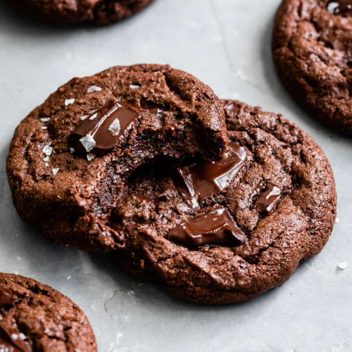

Gluten Free Cookies
Deep dark gluten-free chocolate cookies have crisp edges and gooey chewy centers. Made with either chopped chocolate chunks or chocolate chips, these cookies will satisfy your chocolate cravings.
Ingredients
- 112g (1 cup + ½ tablespoons) Bob's Red Mill gluten-free oat flour
- 36g (3½ tablespoons) Bob's Red Mill sweet rice flour (different from "white rice flour")
- 33g (¼ cup + 2 teaspoons) Bob's Red Mill tapioca flour
- 1/3 cup (33g) Dutch-processed cocoa powder1/3 cup (33g) Dutch-processed cocoa powder
- ½ teaspoon baking soda
- ½ teaspoon kosher salt
- ½ cup unsalted butter, room temperature
- ½ cup (104g) granulated sugar
- ½ cup (100g) dark brown sugar
- 1 large egg, room temperature
- 1 teaspoon vanilla extract
- ½ teaspoon chocolate extract (or sub in more vanilla extract)
- 4oz high-quality bittersweet chocolate, coarsely chopped or 1/2 cup bittersweet chocolate chips
Steps
- Preheat oven to 350°F and line a large baking sheet with parchment paper.
- In a medium mixing bowl, sift together the oat flour, tapioca flour, sweet rice flour, cocoa powder, baking soda, and salt. Set aside.
- In the bowl of a stand mixer fitted with the paddle attachment, cream the butter and sugars together starting on low speed and increasing to medium high speed, until light and fluffy, 3-5 minutes. Scrape down the sides and add the egg and vanilla and chocolate extracts and beat until just combined.
- With the mixer on low speed, slowly add the dry ingredients until just combined. Add about 2/3 of the chopped chocolate or chocolate chips and beat for a few seconds until evenly distributed.
- Scoop 1½ tablespoon-sized balls and place them 2½ inches apart on the parchment-lined baking sheet (I use the OXO medium cookie scoop and it makes exactly 19 cookies). Press 1-2 chocolate chunks onto the top of each cookie dough ball.
- Bake in batches, if needed, for 10 minutes. Let cool for two minutes on the baking sheet before transferring to a cooling rack with a thin metal spatula to cool completely. Sprinkle with flaky salt, if desired.